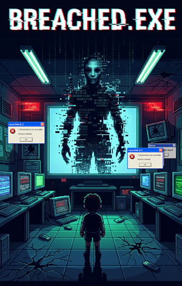

Breached.exe: A Mobile-Based Interactive Cybersecurity Game for FCU SHS Students
After reviewing your proposal, I find that it has a strong and creative concept. The project addresses an important cybersecurity issue through an engaging story and interactive gameplay. The learning objectives are well integrated into the game, making it both educational and enjoyable for players.
Strengths
- The project addresses a relevant and timely cybersecurity problem.
- The storyline is engaging and provides a clear purpose for the player.
- The cybersecurity topics are well organized and progress from basic to advanced concepts.
- The puzzles support the learning objectives rather than serving only as entertainment.
- The proposal demonstrates creativity and originality compared to typical educational games.
Areas for Improvement
- Reduce the project scope. The proposal is too ambitious for a BSIT Capstone Project. It includes multiple playable areas, numerous NPCs, dialogue systems, quests, inventory, save/load features, cutscenes, animations, multiple puzzle systems, audio, and 3D assets. This is comparable to an indie game and may be difficult to complete within the capstone timeline.
- Simplify the game content. The large amount of dialogue, tutorials, scenarios, and unique puzzles will require extensive development, testing, and polishing.
- Improve gameplay variety. Most levels follow the same pattern of exploration, dialogue, puzzles, and server restoration. Consider adding small variations to keep the gameplay engaging.
- Include learning assessment. The proposal should explain how learning effectiveness will be measured through features such as pre-test and post-test, scores, progress tracking, user feedback, or usability evaluation. These features strengthen the academic contribution of the capstone and provide evidence that the game effectively improves cybersecurity awareness.
- Provide more technical details. Clearly specify the game engine, programming language, system architecture, save mechanism, target platform, and other technical components that will be used during development.
Recommendations
- Reduce the number of levels by combining related cybersecurity topics while maintaining the overall storyline.
Sample Option: Combine related topics into three core levels:
- Tutorial (Password Security)
- Level 1: Digital Footprints & Identity Theft
- Level 2: Malware & Phishing
- Final Level: Social Engineering (Comprehensive Review)
This retains all learning objectives while reducing development time by approximately 40-50%.
- Reuse maps, NPCs, and puzzle mechanics instead of creating new assets for every level.
- Focus on delivering a polished educational game rather than adding more features.
- Prioritize core modules and ensure all planned features are fully functional before adding enhancements.
Final Recommendation
The proposal has excellent educational value and is recommended for approval after reducing its scope. I recommend decreasing the overall content by approximately 40% to 50% to make the project realistic and achievable within the capstone schedule.
Remember that the goal of a capstone project is not to build a commercial game but to demonstrate software development skills through a complete, stable, and well-tested system. A smaller, polished project will have a much greater chance of success than a larger project with incomplete or unstable features.